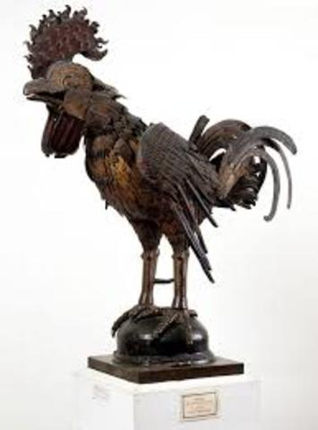
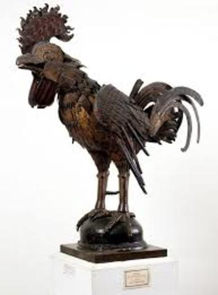
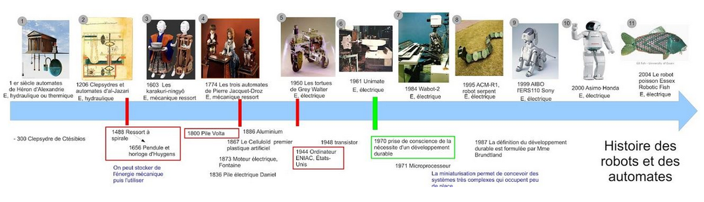

Évolution machines robots maintenant.
 
Vers l'intelligence artificielle.
L'intelligence articielle comprend un niveau supérieur de développement de l'électronique, de la robotique et de l'apprentissage automatique. Si on ajoute le 'big data' et l'exploitation de ces données, il y aura un décuplage de nos prévisions, et une amélioration de nos capacités dans tous les domaines. Comme exemple on a vu la rapadité du vaccin qui a été développé contre la Covid 19. On peut donc s'attendre dans l'avenir à un développemnt exaltant.
Écouter cette pensée critique sur la société et l'intelligence artificielle.
Historique
Les Robots aujourd'hui découlent d'une évolution technique de divers domaines. L'horlogerie, les mesures du temps. Une animation de roue dentelée.
Les automates: ils ne se contentent pas d'effectuer des mouvements préprogrammés, mais interagissent avec leur environnement qui les gouverne.
L'intelligence artificielle: le but ultime de ce domaine est de faire en sorte que les ordinateurs solutionnent des problèmes par eux-mêmes sans une intervention extérieure.

Les robots avec le temps vont nous surprendre. Ils apportent déjà une aide substantielle à la productivité dans nos usines.